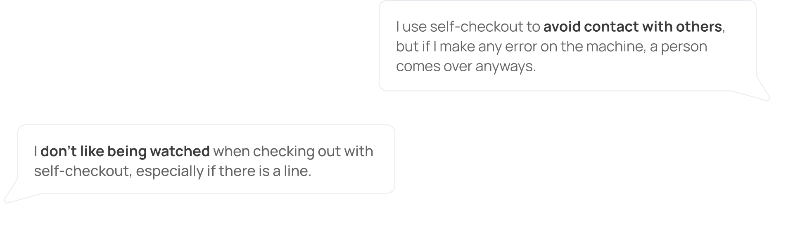
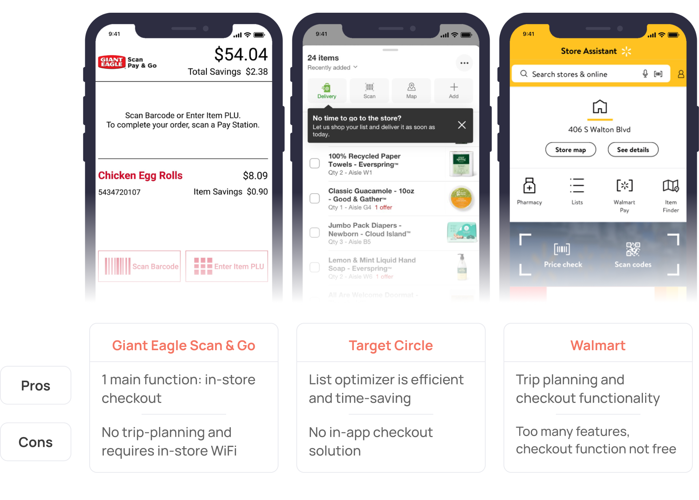
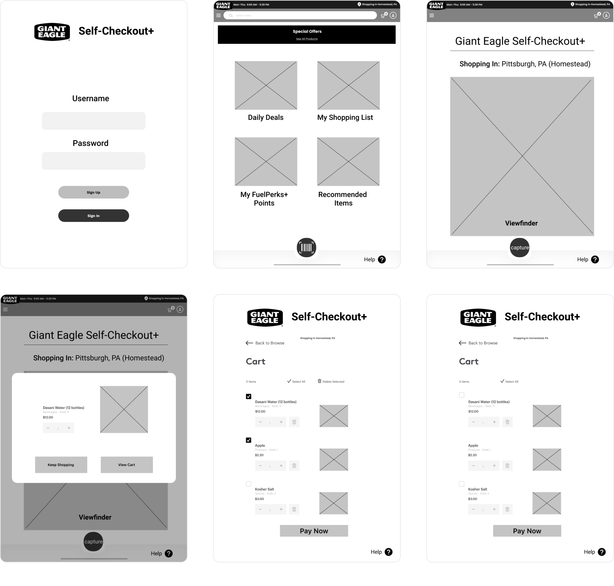

Context
As a UX Designer on this project, I worked alongside three other UX Designers in November 2020 for our Interaction Design Studio 1 class. I focused on creating and refining the design system, user testing prototypes, and understanding the user journey.
Problem
Giant Eagle needs to better compete with competitors in response to the changes that the COVID-19 pandemic has brought upon the grocery industry.
Insight
Customers want to spend less time inside grocery stores and minimize their contact with others. One key area that both areas touch on is the self-checkout process. Interestingly, as the size and quantity of items increase, the usability of the current self-checkout system decreases.
Outcome
A mobile and tablet site for a seamless add-as-you-go system that also helps users plan their trip ahead of time
Storytelling interviews
We aimed to understand how different groups of customers are currently grocery shopping. We conducted 12 storytelling interviews among a diverse group of participants, including parents, working professionals, and college students. We discovered the following insights for the digital and physical grocery shopping experience.

Secondary Research
To gauge existing solutions and opportunities within the grocery
shopping experience, we examined different technologies targeted at
improving the self-checkout experience and the psychology of grocery
stores and their layouts.
We found research that supported our initial findings and pointed out
opportunities within customers' checkout experience – a significant
pain point for most shoppers:
Targeted Interviews
As we narrowed down our focus, we wanted to get more insights into the current state of the checkout experience. We interviewed eight more participants, and we asked questions to gauge their experiences on checking out.
Personas
After reviewing our research, findings, and insights, we came up with two distinct personas representing our main user groups. Our primary user groups focused on young adults and stay-at-home parents.

Customer Journey Mappping
We created a customer journey map for each interview, separating the maps by each stage (consideration, preparation, experience, and post-experience). We merged our findings into a consolidated customer journey map:

Key insights
Being idle
People dislike long wait times, especially during checkout because being idle because it feels like a waste of time.
Minimizing interactions
Even before COVID, people wanted to avoid interacting with others in a grocery store.
Feeling conscious
People don’t like the feeling of being watched or making mistakes during self-checkout.
How might we make navigating the grocery store and checking out more time-efficient?
One of the largest grocery store stressors for customers is the wait time. The satisfaction of customers who enjoy and don't enjoy grocery shopping is significantly impacted by their wait time. This is one area for opportunity that our team aimed to address.

Competitive Analysis
Before ideating, we analyzed three mobile applications in the grocery store space. We looked at Giant Eagle's own application, Target, and Walmart. With these applications, we also listed down some pros and cons to help us with our ideation process:
Ideating solutions
We then listed down small ideas on a sticky note to help with bundling these ideas together. These small ideas were all considered, but we prioritized some ideas over others based on technical feasibility, impact to the user, and our team's time constraints.

New user journey
After bundling our ideas, we decided to targeted the experience stage of the grocery shopping experience. Self-Checkout+ transforms the current shopping experience of customers by innovating the way customers shop and pay for groceries.

Mobile and tablet versions
Users can use their own mobile devices to plan their trip at home then scan items in store. Giant Eagle can also provide mounted tablets on the grocery cart to further facilitate active use of the Self-Checkout+ system.


Low-fidelity prototyping
We timeboxed the design of our low-fidelity prototype in Figma to emphasize creation and ideation over polish.
Navigation bar
We decided to use a bottom navbar instead of a hamburger menu
to help users access nav links faster since it is the
natural location for thumbs.
With more user testing, we found that


Mobile Scanner
As we iterated on the designs, we decided to use minimal colors especially since Giant Eagle red is a bold color that immediately attracts the user's attention. We also found that viewing the grocery list while shopping and calling for assistance added significant value to users.

Mobile Add to Cart
In the earlier iterations, we decided to create a pop-up when a user successfully scans the barcode of an item. However, we found that creating a new page for the item decreased confusion on the next steps. It also gave us space to integrate the suggested quantity found from the user's grocery list.

Mobile Payment
We created more detail for the payment section. We initially added a step to allow users to review their order before finally paying. User testing revealed that this extra step was very confusing, so in our next iteration, we created a swipe to pay action so users can still change their minds before finalizing the payment process.

Users can browse through weekly deals from Giant Eagle and plan their next grocery trip from their homes. They can also refer to old grocery lists when making a new list.
With Self-Checkout+, users can easily ask for help without having
to look for someone to assist them in the store.
Users can view their grocery list as they scan items to add to
their carts. They simply need to scan the barcode,
indicate quantity, and add it to their cart!
With Self-Checkout+, users can easily ask for help without having
to look for someone to assist them in the store.
Users can view their grocery list as they scan items to add to
their carts. They simply need to scan the barcode,
indicate quantity, and add it to their cart!
Users can pay for the items in their cart by sliding the credit card image. They must then show the QR code to a Giant Eagle store associate to inspect and bag the purchased items.
Lessons Learned
Throughout the process of researching, ideating, and iterating, I learned how to work harmoniously with my teammates to come up with one cohesive design that we were all very proud of. Additionally, as a Business + HCI major, I also enjoyed learning how to design a website that improves the grocery shopping experience and balances specific business boundaries and feasibility.